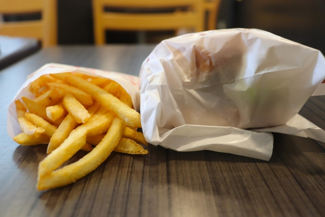
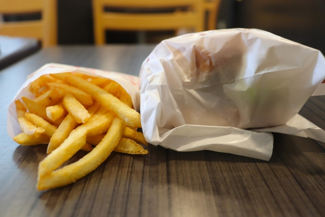
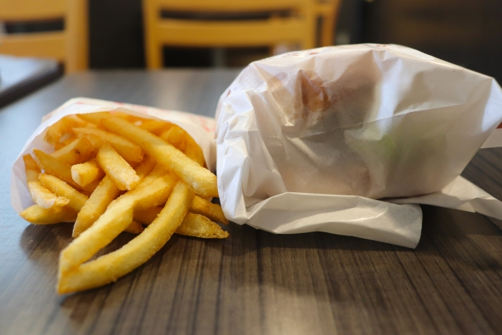

 Title ご提供できるスキル・技術について Content 1.Webサイト構築 これらの技術を利用してWEBサイトを構築します。 HTML/CSS/JavaScript/PHP/WordPress/Git 2.Webデザイン これらのソフトを利用してWEBデザインを行います。その中でサイトマップ、ワイヤーフレーム、デザインカンプを作成します。 Photoshop/illustrator/XD 3.お客様で用意頂くもの -WEBサイトで利用する素材（写真、記事） 基本的に上記のソフト、技術を利用してWEBサイト構築やデザインを行います。詳細はお問い合わせ下さい。 OtherWork （仮想サイト）ハンバーガーサイト１ （仮想サイト）ハンバーガーサイト２ （仮想サイト）ハンバーガーサイト３ （仮想サイト）ハンバーガーサイト４


 
